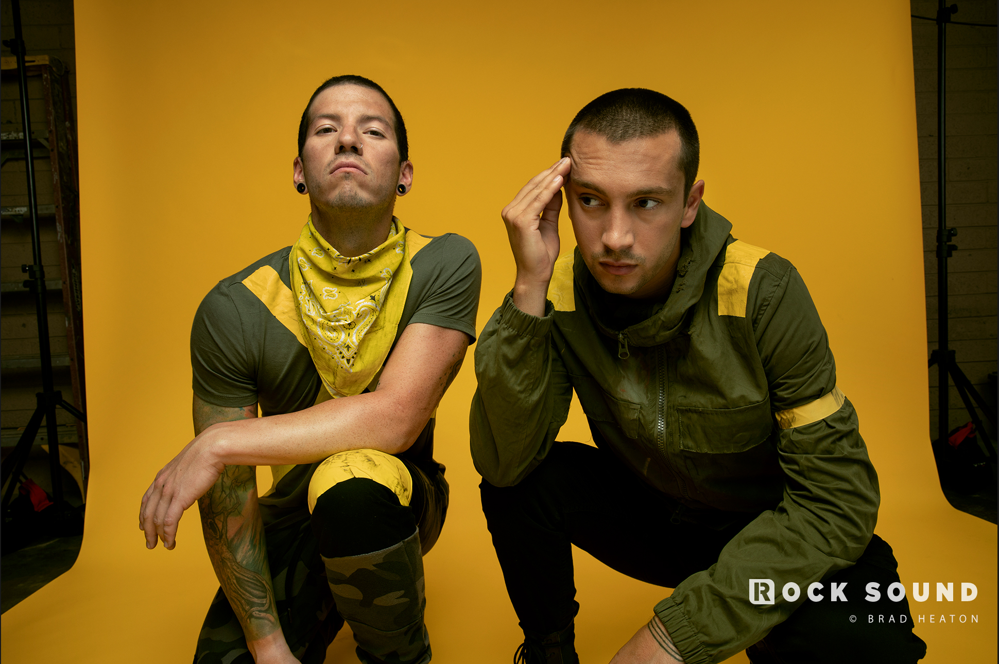

My Favorite Music
Billie Eilish
bury a friend - Billie Eilish

Billie Eilish is a 16 year old singer and songwriter. She wrote her first song, Ocean Eyes, at age 13.
She is well known for her songs You Should See Me in a Crown, and When the Partys Over.
I love her music because it is very different than any other music I have ever heard. She also has a very wide
variety of music, ranging from heavier songs, such as bury a friend , to slower songs such as
idontwannabeyouanymore .
Twenty One Pilots
Chlorine - Twenty One Pilots

Twenty One Pilots is a band that started in 2009, with their first album Twenty One Pilots .
In their music they talk about very important topics such as mental health and suicide, loss of loved ones,
and even love. Their music is very influential and has helped me, and thousands of others, through hard times.
They have become extremely popular in the past couple years, with hit songs such as Jumpsuit and HeavyDirtySoul